Manual Integral de Usuario y Operador
Guía de operación paso a paso profusamente ilustrada para la administración, acreditación, control de aforos y certificación del 1° Congreso de Educación Técnica Superior.
1. Introducción y Acceso a la Plataforma
La plataforma del Congreso ETS 2026 centraliza la experiencia de los participantes y el trabajo operativo del equipo organizador, verificadores y directivos de la Dirección de Educación Técnica Superior (DETS).
1.1 Portal Web Público
A través de la portada institucional, los participantes y la comunidad educativa acceden al programa oficial, información sobre la sede, expositores y enlaces de auto-gestión.
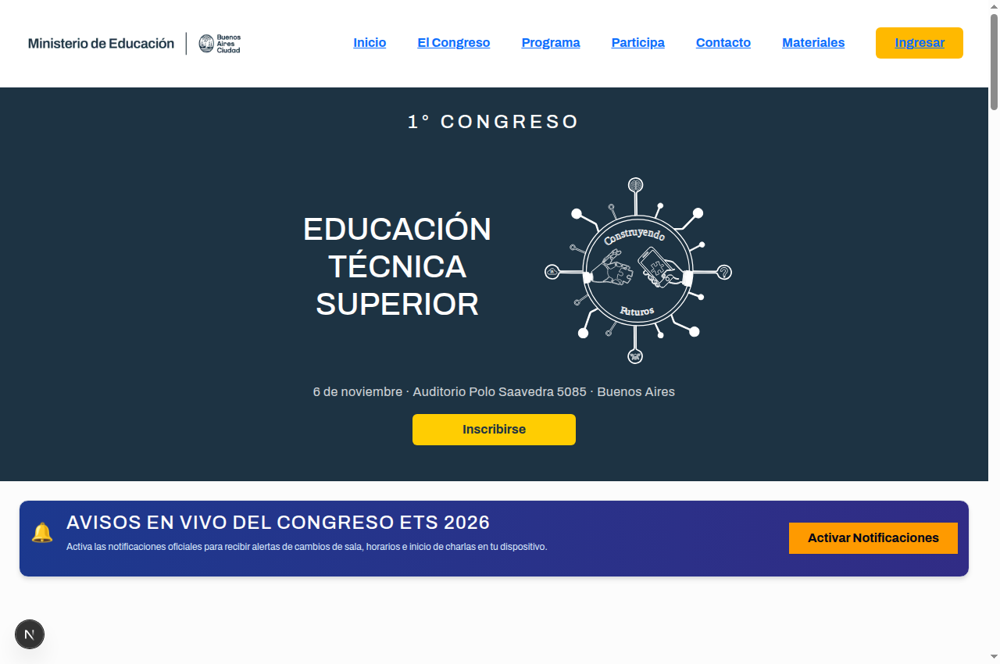
1.2 Inicio de Sesión Administrativo y Operativo
Para ingresar al panel de control administrativo o a la estación de acreditación, los operadores deben acceder a /login utilizando su correo institucional y su contraseña.
1.3 Botón de Visualización de Contraseña
A petición de los operadores en puntos de acreditación rápida, el formulario de ingreso cuenta con un botón interactivo con icono de ojo para revelar/ocultar la contraseña, evitando errores tipográficos en dispositivos táctiles o terminales móviles.
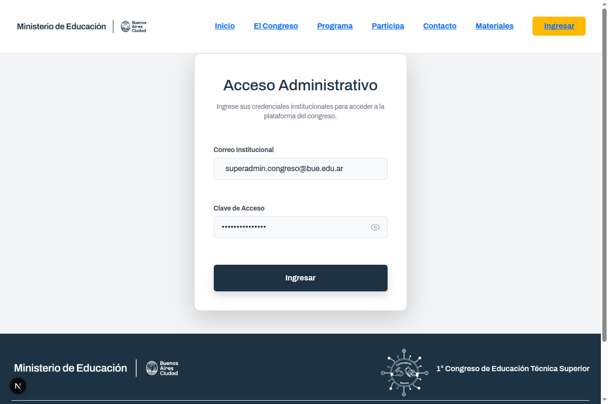
2. Jerarquía de Categorías y Permisos
El acceso a cada menú y botón del sistema está estrictamente gobernado por el rol del usuario, manteniendo fidelidad con el esquema institucional:
| Nivel | Rol del Sistema | Permisos y Accesos Habilitados |
|---|---|---|
| Nivel 5 | Superadmin | Acceso total. Configuración del sistema, auditoría, cron, override de cupos, asignación de roles y backups. |
| Nivel 4 | Administrador | Gestión de actividades, usuarios, acreditados, emisión de diplomas y reportes de aforo. |
| Nivel 3 | Verificador | Consulta avanzada de acreditaciones, homologación de certificados y monitoreo de salas. |
| Nivel 2 | Operador | Escaneo de credenciales en accesos asignados, búsqueda manual por DNI y check-in. |
| Nivel 1 | Asistente | Consulta de agenda personal, visualización de gafete QR y descarga de certificado propio. |
3. Portal Público, Formulario de Inscripción y Notificaciones Push
A través de la portada del Congreso (/) y el botón "Inscribirse", los interesados acceden al formulario oficial de registro en /participa:
- Métricas de Aforo en Tiempo Real: El formulario consulta la API de vacantes (
/api/vacantes) e informa instantáneamente los cupos disponibles en el Auditorio Polo Saavedra 5085 o la activación de la lista de espera. - Datos Personales y Documento: Ingreso de DNI/Pasaporte (sanitizado alfanumérico), Teléfono Celular (para alertas de cronograma y salas), Nombre, Apellido y Correo Electrónico.
- Rol Institucional Dinámico: Carga directa desde la base de datos de los roles oficiales (Estudiante, Docente, Expositor, Autoridad), con opción de tildar roles adicionales no excluyentes.
- Consentimiento Normativo (Ley 25.326): Casilla obligatoria de autorización para el tratamiento de datos personales, control de aforo y expedición de diplomas ministeriales.
- Confirmación y Conexión Automática a Credencial: Si la inscripción resulta confirmada o en espera, el sistema brinda acceso inmediato a la credencial digital (
/mi-credencial?dni=...) con su token criptográfico QR. Si el DNI ya existía previamente, ofrece consulta directa sin duplicar el registro.
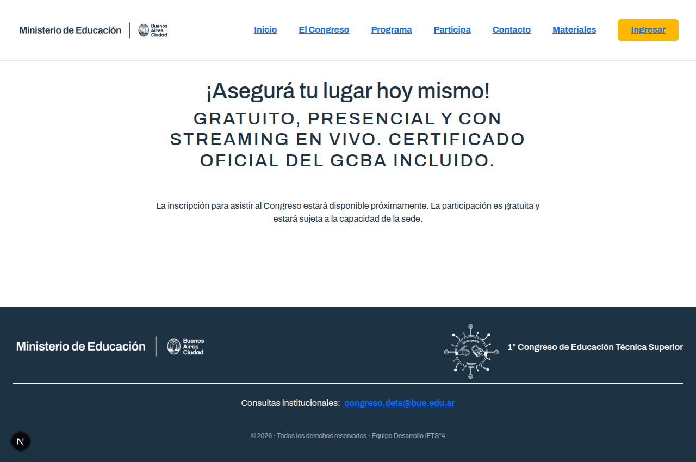
3.1 Notificaciones Push en Vivo (Web Push PWA para Registrados)
Tanto en la portada institucional como en la vista de credencial se dispone del banner interactivo "🔔 Activar Notificaciones". El servicio está reservado exclusivamente para la comunidad de asistentes inscriptos:
- Exclusividad para Participantes Registrados: Si el usuario pulsa el botón desde la portada, el sistema solicita su DNI o Pasaporte y valida contra la base de datos PostgreSQL que se encuentre efectivamente registrado en el congreso antes de habilitar la suscripción. Si accede desde
/mi-credencial, la vinculación se realiza automáticamente con su identidad. - Protocolo Estándar VAPID Web Push: El navegador solicita permiso nativo y suscribe al Service Worker mediante el estándar RFC 8292 con claves públicas del servidor.
- Almacenamiento y Emisión Focalizada: La suscripción se guarda vinculada al identificador del participante (
suscripciones_push.usuario_id). Las emisiones masivas y segmentadas del panel de control solo se dirigen a inscriptos válidos. - Confirmación Inmediata: Al activarse, el dispositivo recibe un aviso de bienvenida emergente confirmando que está conectado al canal oficial de avisos en tiempo real.
3.2 ¿A quiénes se envían las novedades y notificaciones del sistema?
El sistema cuenta con reglas estrictas de segmentación para garantizar que las notificaciones lleguen únicamente a los destinatarios pertinentes:
- 1. Aviso Inmediato de Bienvenida (Al Activar): Se emite únicamente al dispositivo del participante que acaba de presionar el botón y validó su registro, confirmándole que su terminal quedó enlazada exitosamente.
- 2. Promociones Individuales de Vacante (Lista de Espera ➔ Confirmado): Se remite exclusivamente al aspirante beneficiado (mediante su
usuario_idúnico). Al ser promovido manualmente o por vacante liberada, sus dispositivos reciben el aviso confirmándole que su vacante fue asignada y su credencial está activa. - 3. Comunicados y Novedades en Vivo desde el Panel Admin (
/admin?tab=push): La comitiva organizadora y los directivos pueden emitir avisos categorizados seleccionando tres niveles de audiencia:- Todos los Participantes Registrados: Emisión generalizada (la base de datos aplica el filtro estricto
sp.usuario_id IS NOT NULL, impidiendo envíos a visitantes anónimos o no inscriptos). - Segmentado por Rol Institucional: Permite filtrar avisos específicos exclusivamente para Estudiantes, Docentes, Disertantes / Expositores, etc.
- Solo Asistentes Acreditados en la Sede (Ingreso Físico): Se cruza en tiempo real con la tabla forense de
acreditaciones(tipo_movimiento = 'INGRESO'). De este modo, ante un llamado a sala urgente, inicio de receso o cambio de aula in situ, la alerta solo suena en los teléfonos de quienes ya atravesaron los puntos de acceso del predio.
- Todos los Participantes Registrados: Emisión generalizada (la base de datos aplica el filtro estricto
4. Consulta y Descarga de Credencial (Gafete QR)
Cada asistente registrado puede consultar y descargar su credencial digital ingresando su DNI en /mi-credencial.
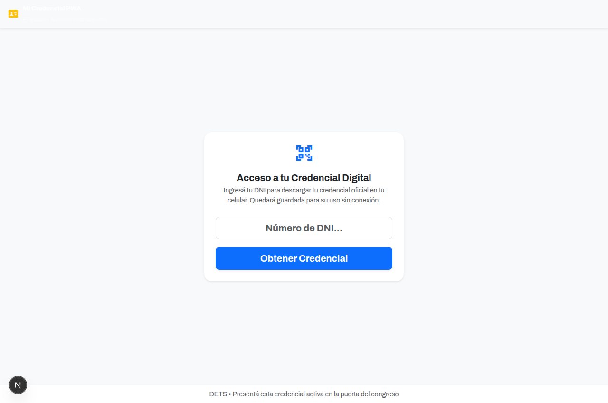
5. Panel Administrativo Central (Dashboard)
Al autenticarse con perfil Administrador o Superadmin, se despliega el Tablero de Comando Central con indicadores métricos consolidados:
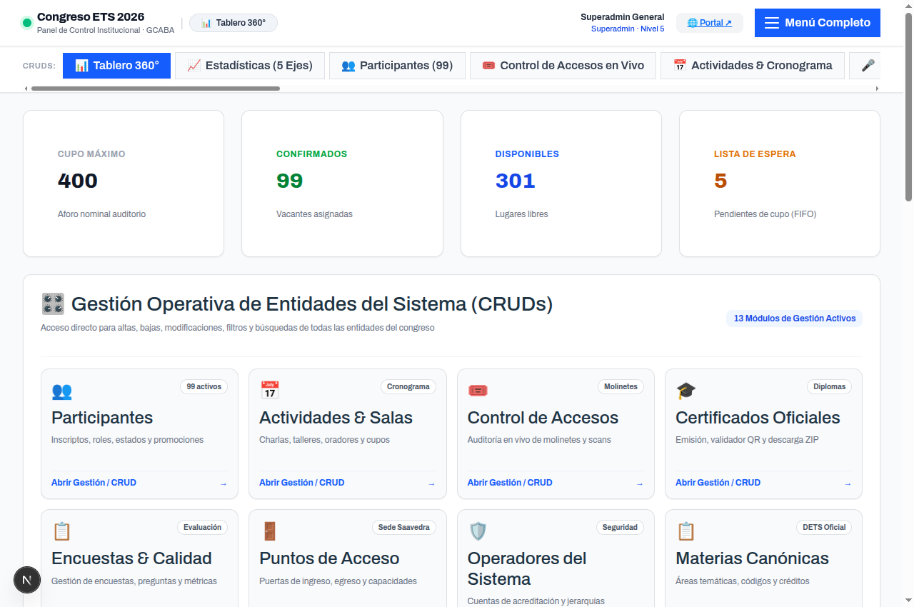
Indicadores Principales:
- Total de Inscriptos: Registro acumulado de participantes registrados.
- Presentes en Sede: Conteo en tiempo real de personas que han realizado check-in hoy.
- Ocupación de Salas: Porcentaje consolidado de aforo utilizado vs disponibilidad.
- Certificados Homologados: Cantidad de diplomas habilitados por cumplimiento del 75% de asistencia.
6. Gestión de Usuarios y Categorías del Sistema
En la pestaña Usuarios, los directivos pueden administrar las cuentas de acceso del personal, asignar roles institucionales y gestionar el reseteo de claves.
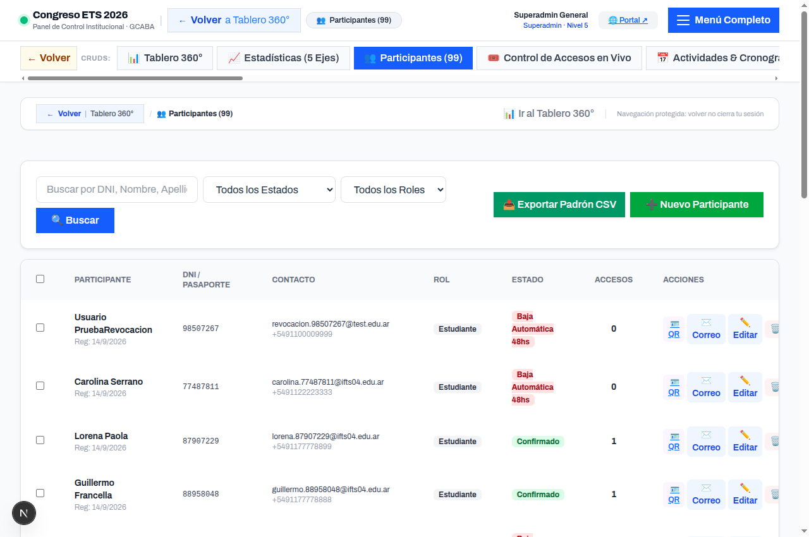
Reglas de Admisión y Estados según Rol:
El sistema cuenta con validaciones estrictas en la selección de estados tanto en edición individual como en cambios masivos (batch):
- Rol Estudiante: Admite la totalidad de los estados del congreso:
Confirmado,Cancelado,Lista de espera,Baja Automática 48hsySancionados. Permite aplicar los protocolos disciplinarios y cupos estudiantiles del reglamento oficial. - Otros Roles (Docentes, Invitados, Prensa, Autoridades, Operadores, Administradores): Únicamente admiten los estados estándar
ConfirmadoyCancelado. Cualquier intento de asignación de estados de sanción o lista de espera queda bloqueado tanto en la interfaz como en el backend.
7. Cronograma, Actividades y Prevención de Solapamientos
La pestaña Actividades permite configurar conferencias, paneles y talleres prácticos en cada una de las salas de la sede. Toda la información ingresada alimenta de forma inmediata el Programa Oficial del Congreso visible en el portal público (/programa y sección principal), garantizando consistencia absoluta entre la base de datos PostgreSQL y la interfaz de usuario.
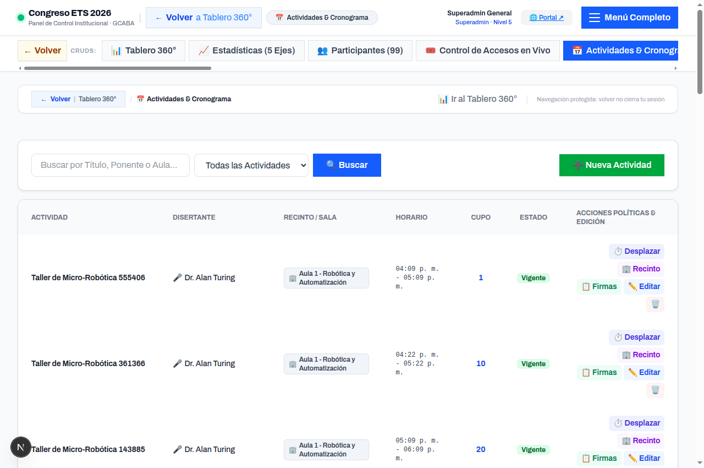
Motor de Lista de Espera Inteligente:
Si una actividad completa su aforo, los nuevos registros pasan automáticamente a la Lista de Espera. Si un participante inscripto cancela o se libera un cupo, el sistema promueve de forma automática al primer asistente en espera y le remite un aviso por correo electrónico.
8. Configuración de Puntos de Acceso Físicos
Para sectorizar el ingreso (Ej: Entrada Principal, Auditorio A, Taller Informática), el sistema administra puntos de acceso independientes vinculados a los operadores:
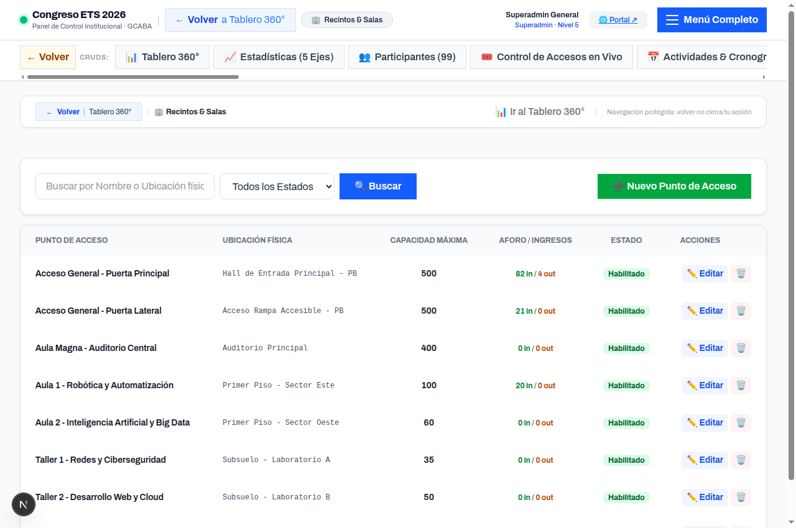
9. Módulo de Acreditación y Aplicación PWA Offline
La acreditación puede gestionarse desde dos interfaces complementarias:
9.1 Gestión Administrativa de Acreditados
Permite visualizar el padrón general, filtrar por estado (Pre-inscripto, Acreditado, En Espera), buscar por DNI y registrar acreditaciones manuales de contingencia.
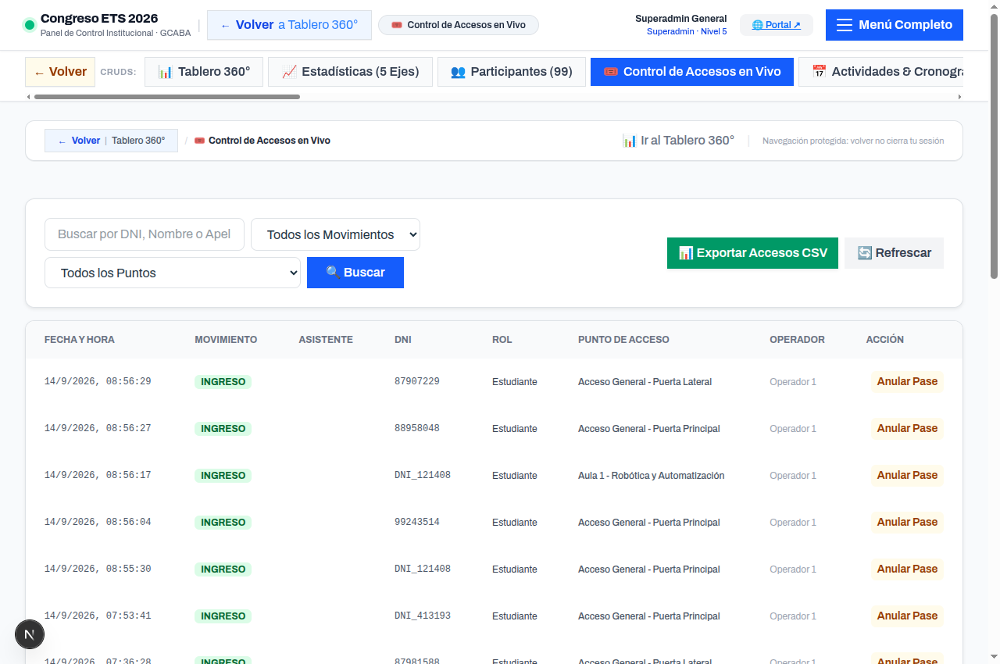
9.2 PWA de Acreditación Rápida para Operadores Móviles
Diseñada para tablets y celulares en la puerta de entrada (/pwa-operador). Utiliza la cámara integrada para escanear los códigos QR de los gafetes en menos de 0.3 segundos.
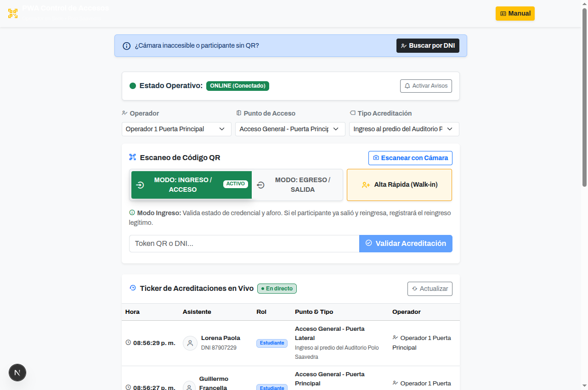
10. Emisión de Certificados y Diseñador Visual WYSIWYG
El módulo de Certificados valida el cumplimiento de las políticas de acreditación institucional (75% de asistencia mínima o presencia en actividades clave) y proporciona un Editor Visual WYSIWYG integrado para personalizar diplomas en tiempo real sin modificar código.
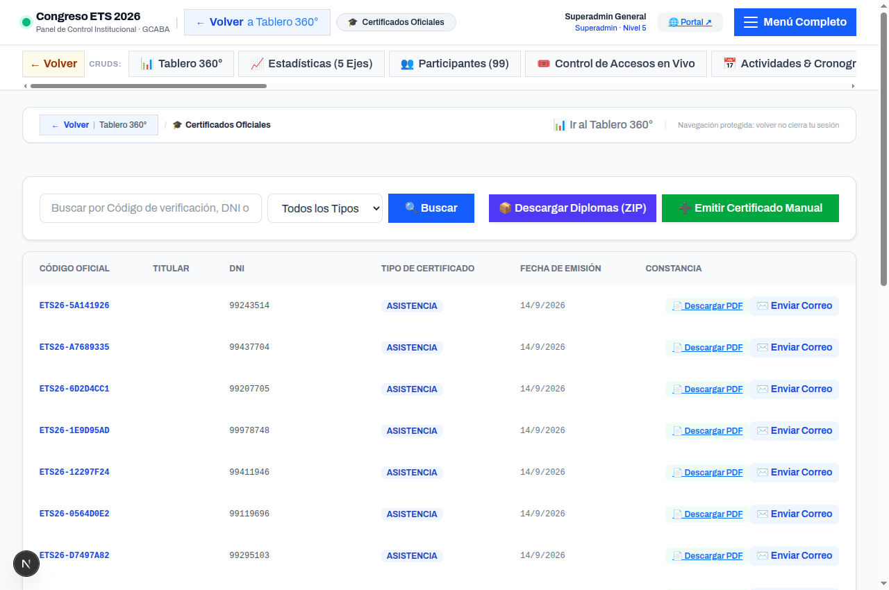
10.1 Diseñador Visual WYSIWYG de Diplomas
Al hacer clic en el botón destacado "🎨 Diseñar Plantilla de Certificado", se abre una ventana modal de edición en pantalla dividida (split-screen):
- Panel Izquierdo de Personalización:
- Identidad Institucional: Título del emisor superior (ej. "DIRECCIÓN DE EDUCACIÓN TÉCNICA SUPERIOR"), subtítulo del organismo y título de certificación (ej. "CERTIFICADO DE ASISTENCIA").
- Cuerpo del Diploma: Texto declarativo con placeholders automáticos interactivos (
{NOMBRE},{DNI},{EVENTO},{FECHA},{HORAS}). - Paleta Cromática Oficial: Selectores de color hex para el borde exterior/orla, el texto del encabezado y el texto del nombre del participante, con previsualización inmediata.
- Gestión Dinámica de Autoridades Firmantes: Permite agregar, editar o remover de 1 a 4 autoridades firmantes (Nombre y Cargo/Función). El motor ajusta de forma responsiva las líneas de firma y sus distancias relativas.
- Panel Derecho de Previsualización en Vivo:
Muestra el diploma renderizado con las dimensiones exactas A4 apaisadas, recreando fielmente la tipografía, orlas geométricas, sellos y el código QR de validación canónica.
- Descarga de Prueba Inmediata:
El botón "Descargar PDF de Prueba" solicita al backend el renderizado vectorial real del documento binario mediante
pdf-lib, permitiendo inspeccionar la calidad de impresión antes de aplicar cambios a nivel productivo. - Persistencia Segura en Base de Datos:
El botón "Guardar Plantilla" persiste la nueva estructura JSON en la tabla
configuraciones_sistemacon auditoría forense inmediata.
11. Gestión de Encuestas de Calidad y Diseñador Visual WYSIWYG
Ubicado en la pestaña "Encuestas" del panel administrativo. Permite evaluar la calidad pedagógica y organizativa del congreso, así como aplicar el bloqueo pedagógico que condiciona la entrega del certificado a la previa respuesta del cuestionario.
11.1 Gestión y Métricas de Satisfacción
La vista principal del módulo lista las encuestas registradas, su ventana de fechas activas, estado de obligatoriedad y el botón de Métricas y Resultados que presenta:
- Puntuación promedio de satisfacción global en escala 1 a 5 estrellas.
- Gráficos de barras con la distribución porcentual de opciones elegidas en preguntas cerradas.
- Muro analítico de comentarios cualitativos y sugerencias pedagógicas para futuras ediciones.
11.2 Diseñador Visual WYSIWYG de Encuestas
Al pulsar "🎨 Diseñador WYSIWYG" en cualquier encuesta, se inicia el constructor interactivo que sincroniza en una sola vista la edición y la experiencia del asistente:
- Metadatos y Reglas de Negocio: Edición en vivo de título, descripción de bienvenida, fechas de inicio/fin y casilla de verificación "Obligatoria para descargar certificado".
- Batería de Preguntas Dinámica:
- ⭐ Calificación por Estrellas (1 a 5): Ideal para evaluar aspectos organizativos, sonido, oradores y talleres.
- 🔘 Selección Única (Radio Buttons): Preguntas cerradas con agregado dinámico de opciones personalizadas.
- 📝 Texto Abierto / Devolución Libre: Espacio de redacción para comentarios y observaciones del asistente.
- Previsualizador Interactivo en Tiempo Real:
Muestra cómo visualizará la encuesta el asistente en su teléfono móvil o computadora. Permite alternar entre la vista 📱 Móvil (390px) y 💻 Escritorio (100%) con simulación completa de clics en estrellas, opciones y campos de texto.
- Sincronización Transaccional Batch:
El botón "💾 Sincronizar y Guardar Encuesta" envía todo el formulario al endpoint
PUT /api/encuestas/:id/sync-completa, garantizando consistencia relacional mediante una transacción ACID que reemplaza y actualiza en un solo paso preguntas y metadatos.
12. Parámetros del Sistema, Notificaciones y Correo Google
En la pestaña Configuración, el administrador configura las cuentas de correo institucional, los avisos push y el entorno de pruebas:
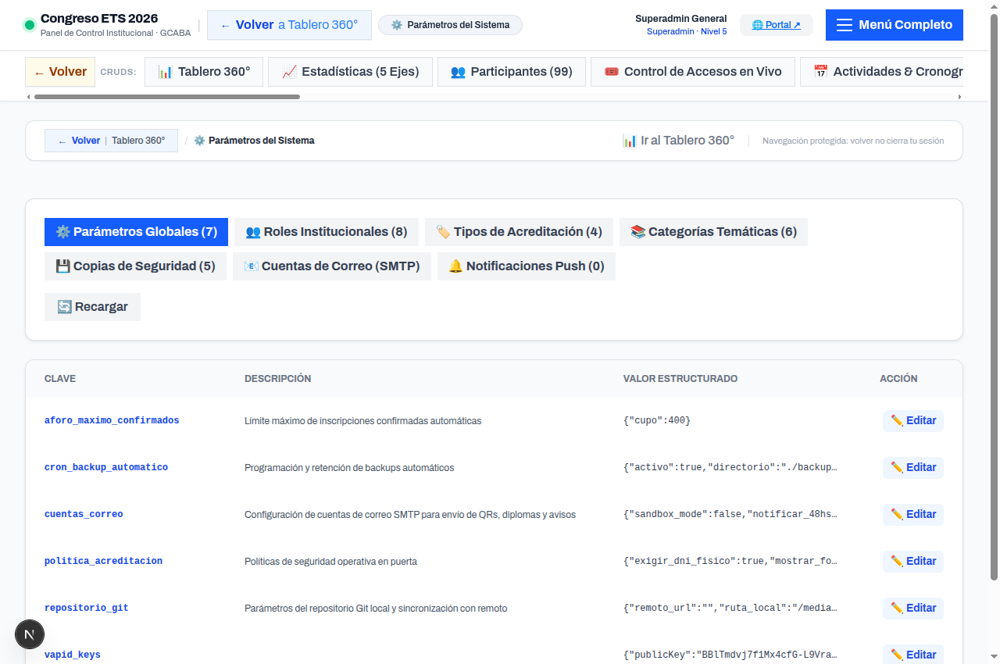
Configuración de Google SMTP:
- Servidor:
smtp.gmail.com| Puerto:587(STARTTLS). - Usuario:
nestor.pineiro@gmail.com. - Contraseña de Aplicación de 16 caracteres: Obligatoria para clientes externos según los requisitos de seguridad de Google.
- Modo Sandbox Institucional: Permite probar todo el flujo de inscripciones y emisión de QRs sin emitir correos externos reales.
13. Auditoría Forense y Respaldo de Datos (Backups)
El sistema registra de manera inmutable cada acción relevante (inicios de sesión, cambios de roles, acreditaciones y modificaciones de cupos):
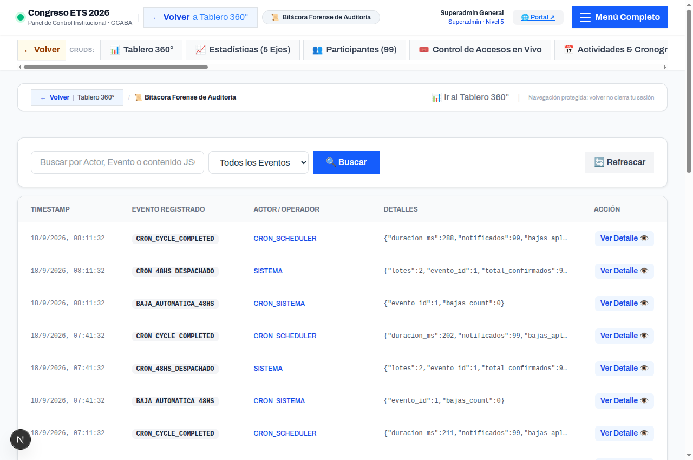
14. Tareas Programadas y Cron Automático
El monitor de tareas programadas muestra los procesos que corren en segundo plano (recordatorios de 48hs previas, auditoría periódica y purga de sesiones inactivas):
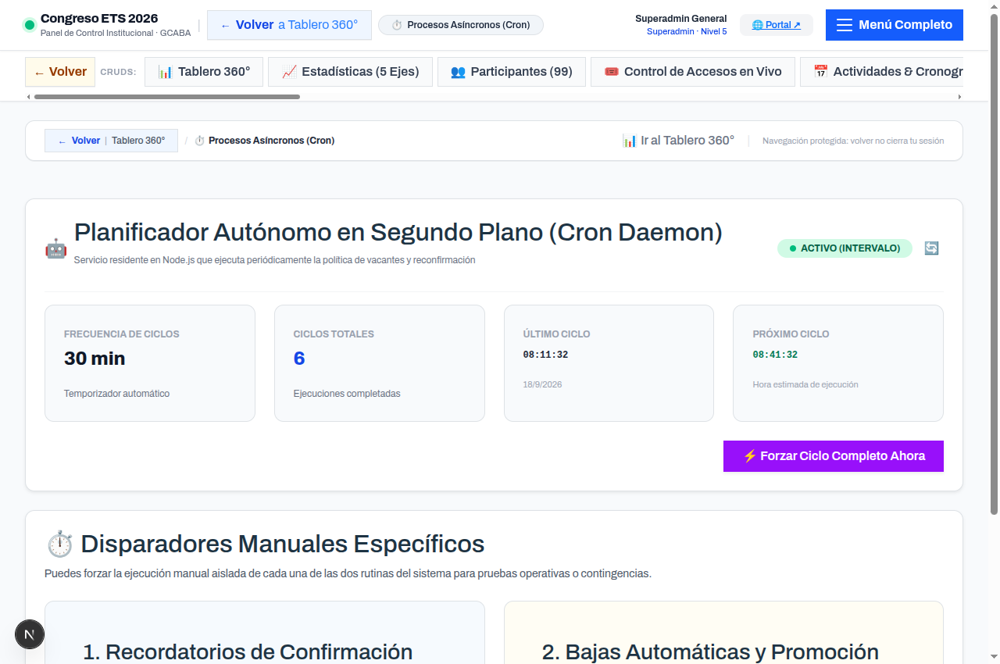
15. Estadísticas Desglosadas y Reportes de Gestión
En la pestaña Estadísticas 5 Ejes, se presentan los informes de gestión institucional organizados por los ejes temáticos del Congreso:
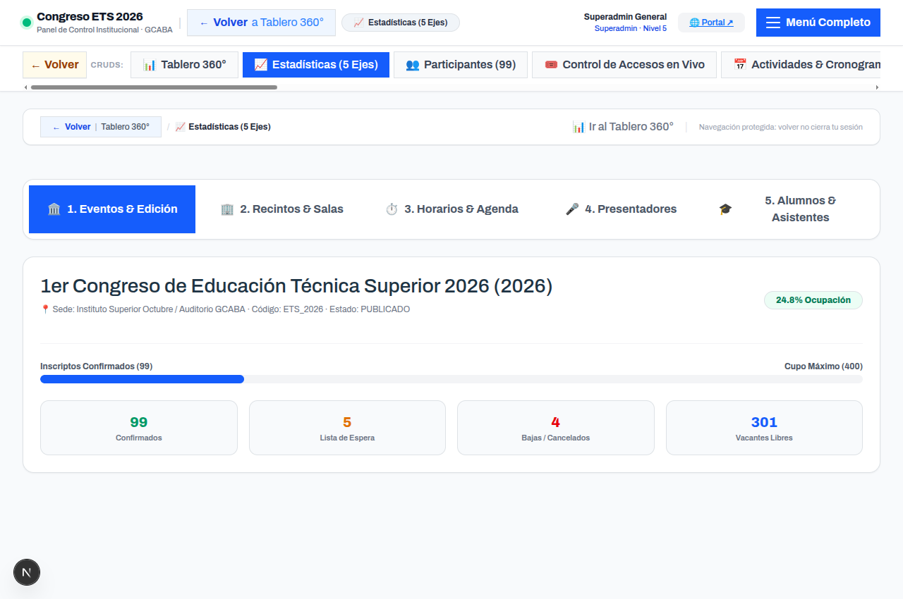
16. Personalización Visual y Editor de Temas del Backend
El sistema cuenta con un motor de personalización cromática y un Editor de Temas en Vivo accesible desde Configuración ➔ 🎨 Temas del Backend. Permite transformar la apariencia de todo el panel administrativo en tiempo real, adaptando la interfaz al confort visual de cada operador sin alterar jamás el portal público ni las credenciales oficiales de los asistentes.
16.1 Paletas Predefinidas Disponibles
El operador puede seleccionar con un solo clic cualquiera de las plantillas cromáticas integradas:
-
🏛️ Paleta Oficial CABA Institucional: Basada estrictamente en la identidad visual del Gobierno de la Ciudad y el Frontend oficial: Azul Oscuro (
#1D3343), Azul Claro (#035C80), Amarillo GCABA (#FFCD02) y Blanco Nieve (#FCFCFC). - ☀️ Claro Institucional: Esquema blanco luminoso con escala de grises slate y acento azul gubernamental.
-
🌙 Oscuro Profundo: Modo nocturno carbón pizarra con fondos oscuros (
#0B1120/#1E293B) y tipografía blanca de alto contraste para reducir la fatiga ocular. -
🌿 Menta & Salvia Pastel: Fondo pastel suave verde menta (
#E8F5E9) combinado con tipografía densa verde bosque (#14532D) bajo estándares de accesibilidad WCAG AAA. -
🌊 Cielo & Zafiro Pastel: Fondo celeste pastel (
#E0F2FE) con tipografía azul marino profundo (#0C4A6E). -
🌸 Lavanda & Ciruela Pastel: Fondo lila pastel (
#F3E8FF) con tipografía ciruela púrpura (#3B0764). -
🍑 Durazno & Café Pastel: Fondo cálido durazno (
#FFEDD5) con tipografía chocolate oscuro (#431407).
16.2 Inspector Interactivo "Clic para Corregir"
En la subpestaña 🎯 Clic & Corrección en Vivo, el operador visualiza una maqueta funcional del sistema. Al hacer clic directamente sobre cualquier componente, el editor lo detecta y abre a la derecha únicamente los valores a modificar:
| Elemento Clicado | Variables Modificables | Propósito Visual |
|---|---|---|
| Fondo General | --admin-bg, --admin-text-main |
Fondo perimetral del sistema y color base del texto. |
| Encabezado / Header | --admin-header-bg, --admin-text-header, --admin-border |
Barra superior de logos, accesos y divisores. |
| Tarjetas y Paneles (Cards) | --admin-card-bg, --admin-border, --admin-text-muted |
Contenedores modulares donde se ubican formularios y tablas. |
| Cajas de Entrada (Inputs/Selects) | --admin-input-bg, --admin-input-text, --admin-input-border |
Campos de búsqueda, filtros y cajas de edición. |
| Botón de Acción (Acento) | --admin-accent, --admin-accent-text, --admin-accent-hover |
Botones principales de guardar, confirmar o filtrar. |
| Botón Secundario (Cancelar) | --admin-btn-secondary-bg, --admin-btn-secondary-text, --admin-btn-secondary-border |
Botones neutros para volver, cancelar modales o limpiar filtros. |
| Acciones Críticas / Peligro | --admin-danger-bg, --admin-danger-text |
Botones de eliminación, rechazo o sanciones disciplinarias. |
| Acciones Positivas / Éxito | --admin-success-bg, --admin-success-text |
Botones de aprobación, emisión de diplomas y confirmación de asistencia. |
| Insignias y Badges | --admin-badge-bg, --admin-badge-text |
Etiquetas de estado (Acreditado, Pendiente, Confirmado) y roles de usuario. |
| Ventanas Modales y Diálogos | --admin-modal-bg, --admin-modal-text, --admin-border |
Superficies y textos de ventanas flotantes de edición o confirmación. |
| Tablas de Datos | --admin-table-header-bg, --admin-table-row-hover, --admin-border |
Cabeceras de columnas y efecto visual al apoyar el cursor. |
16.3 Fijar Tema como Predeterminado Global del Sistema
Los administradores y superadministradores pueden estandarizar el tema visual para toda la organización:
- Botón 💾 Fijar como Default Global: Disponible tanto en la barra de acciones del Inspector en Vivo como en la cabecera de Paletas Predefinidas.
-
Persistencia en Base de Datos: Al pulsar el botón y confirmar el diálogo interactivo, la configuración activa (sea una paleta oficial como CABA o una personalizada creada con el inspector) se envía al servidor y se graba en PostgreSQL (tabla
configuraciones_sistema, clavetema_backend_default). - Aplicación Inmediata a Nuevos Operadores: Cualquier operador que ingrese al sistema desde una nueva terminal o navegador recibirá automáticamente este tema oficial por defecto, sin necesidad de configuración manual.
localStorage), pero si se desea que un tema sea la imagen corporativa oficial para todos, basta pulsar 💾 Fijar como Default Global. Además, 📋 Exportar JSON permite compartir configuraciones y 📥 Importar JSON cargarlas instantáneamente.